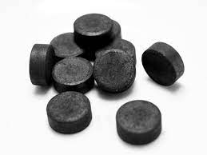

Structure of Diamond
Each carbon atom is linked with three neighboring carbon atoms. It thus forms a flat hexogonal arrangement of atoms.
Some uses of graphite are: For making crucibles,lubricant in machines, pencil leads, petroleum jelly and electrods of electric furnaces.
Each carbon atom is linked to 4 other carbon atoms as there are 4 valence electrons in a caarbon atom.
Some uses of diamond are: Used for cutting and drilling rocks, glass or other diamonds. It is used in jewellery as well.

Coal and Coke
Coal:Used as domestic and industrial fuel. Used top prepare coke,coal gas, coal tar. Manufacture of synthetic petrol,drugs,textile,perfumes and fertilizers. It is the source of organic compounds.
Coke:Used as a smokeless fuel. Manufacture of water gas and producer gas. Reducing agent in ectravtion of metals and it is also used for making artificial graphite and metallic carbide.

Bone Charcoal